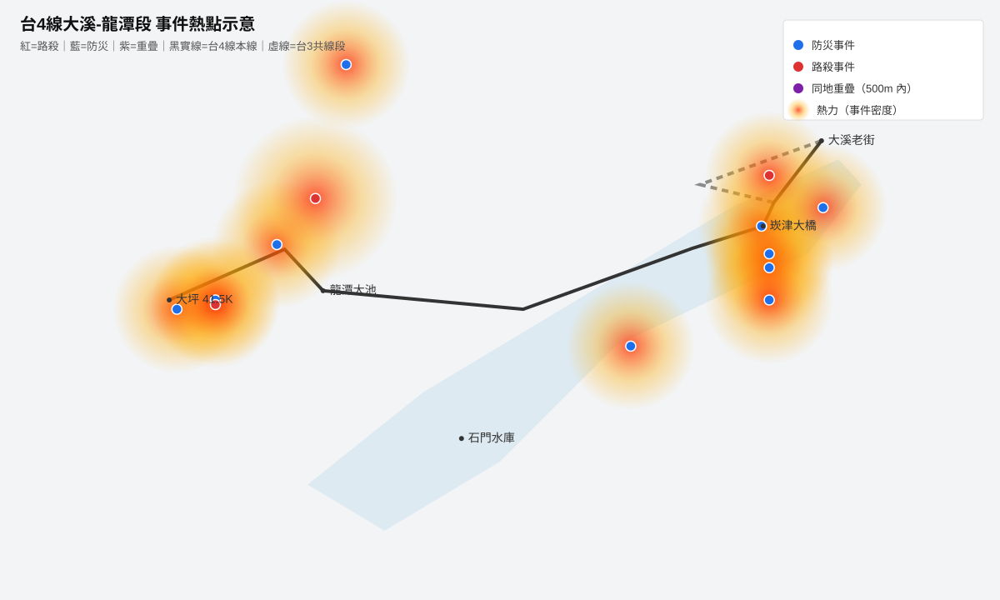

只收錄能由公路局公告、新聞報導、路殺社紀錄或政府文件確認地點與時間，且能可靠定位的事件。點選任何熱點，都可直接讀原始來源。
分析範圍：台4線 25K（大溪老街周邊）至 41.544K（龍潭大坪），路中心線兩側 500 公尺為緩衝廊道。資料期間：2014-02-01 至 2026-07-11。凡標「非台4廊道」的參考事件，作為周邊風險背景，不列入廊道統計。
先看整段廊道的空間分布；再切換下方可點地圖查每一則原始來源。

兩層事件可獨立開關；點熱點展開該地全部事件；側欄可依類型、年份、廊道位置篩選。
底圖：© OpenStreetMap 貢獻者。座標若為推估，事件詳細頁的備註會註明。
依日期由新到舊排序。即使地圖載入失敗，右側「獨立頁」仍可直接打開完整欄位與資料來源。
事件必須：(a) 有可查證的原始來源（新聞連結、公路局公告、路殺社紀錄或政府文件）；(b) 有明確地點描述能定位；(c) 發生於台4線 25K-41.544K 範圍或路中心線兩側 500m 緩衝廊道內。廊道外但同區具參考價值者，標「參考事件」併同顯示，不列入廊道統計。
無法定位者、僅為傳聞未查證者、發生於台4線範圍外且無區域參考價值者，不放進地圖。
同一地點多次發生仍各算一筆；巡守隊/野放等彙整型資料以「AGG」為 ID 尾綴且日期記為當年12/31以便呈現。
WGS84 十進位度，5 位小數（約 1 公尺）。座標由地標推估者，事件詳細頁備註標明「座標推估」。